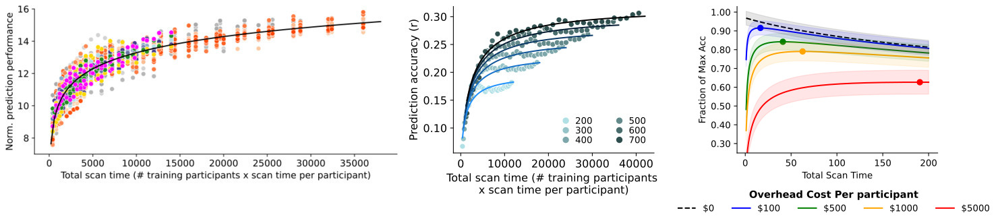

Ooi LQR*, Orban C*, Zhang S*, Nichols TE, ..., Yeo BTT. MRI economics: Balancing sample size and scan duration in brain wide association studies. bioRxiv, 2024.
A pervasive dilemma in neuroimaging is whether to prioritize sample size or scan duration given fixed resources. Here, we provide a tool that calculates the achievable individual-level prediction accuracy with different combinations of fMRI sample size and scan durations, after taking into account other study costs. This tool was built on 6 diverse datasets spanning phenotypic domains (cognition, personality, physical attributes, mental health, PET measures, etc), scanners (Siemens, GE and Philips), acquisition protocols (single-echo-single-band, single-echo-multi-band, multi-echo-multi-band), continents (North America and East Asia), health status (healthy, psychiatric disorders, mild cognitive impairment, Alzheimer's disease), age groups (children, young adults, elderly), as well as resting-state and task-state functional connectivity. Our study found that the optimal scan time range was largely similarly across the datasets, suggesting that this calculator will be useful for most applications.

Sample size (N): Scan time (T/min):
% max prediction accuracy (r) : v0.01 (05/11/2024): Initial release of web app
Bugs and questions: Please contact Leon Ooi (leonooiqr@gmail.com), Shaoshi Zhang (0zhangshaoshi0@gmail.com) or Thomas Yeo (yeoyeo02@gmail.com).